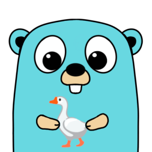

LinGoose Documentation


LinGoose (Lingo + Go + Goose ) aims to be a complete Go framework for creating LLM apps. 🤖 ⚙️
Did you know? A goose fills its car 🚗 with goose-line ⛽!
- Version: 0.0.3
- Author: Simone Vellei
- Created: 27 April, 2023
- Update: 27 April, 2023
If you have any questions that are beyond the scope of this help file, please feel free to email me: henomis@gmail.com.
Installation
The first step to get started is to install lingoose.
If you want to add lingoose to your Go app, then run the following command:
$ go get github.com/henomis/lingooseFrom source
If you want to clone the repository, then run the following command:$ git clone https://github.com/henomis/lingoose.gitQuick start
You really should read the whole documentation, but if you are in a hurry, here is a quick start guide.
This is a very (very!) simple example of how to use lingoose. It will create a new OpenAI LLM and execute it using a prompt. That's it.
package main
import (
"fmt"
"github.com/henomis/lingoose/llm/openai"
)
func main() {
llmOpenAI, err := openai.New(
openai.GPT3TextDavinci003,
openai.DefaultOpenAITemperature,
openai.DefaultOpenAIMaxTokens,
true,
)
if err != nil {
panic(err)
}
response, err := llmOpenAI.Completion(context.Background(), "Hello AI. How are you?")
if err != nil {
panic(err)
}
fmt.Println(response)
}
Did I mention that this is a very simple example?
You can do a lot more with LinGoose! I suggest you to read the
whole documentation to learn more.
API
LinGoose provides various components, use them to create your own AI app.
Prompt
A Prompt is a text. Simply.
LLMs (Language Learning Model) are a powerful tools, they can generate a text from an input. The input is called Prompt.
"Write a short joke about geese"
This is a prompt. And, if your LLM is smart enough, it will complete your input generating a joke about geese. Let's see how to create a prompt in LinGoose.
jokePrompt := prompt.New("Write a short joke about geese")
fmt.Println(jokePrompt.Prompt())
Write a short joke about geese
Simple, isn't it? Now you can use this prompt to generate funny jokes.
Prompt Templates
Hey but wait a minute! What if I want to generate a joke about a
cat? And what if the animal is a variable? Well, you can use a
prompt template. LinGoose prompt templates use the powerful Go
text/template package. If you don't know how to use
it, I suggest you to read the
official documentation. However, here
is a simple example:
jokePromptTemplate, err := prompt.NewPromptTemplate(
"Write a short joke about {{.animal}}",
types.M{"animal": "geese"},
)
...
err = jokePromptTemplate.Format(nil)
...
fmt.Println(jokePromptTemplate.Prompt())
Format() method:
jokePromptTemplate, err := prompt.NewPromptTemplate(
"Write a short {{.type}} about {{.animal}}",
types.M{"animal": "geese"},
)
...
err = jokePromptTemplate.Format(types.M{"type": "joke"})
...
fmt.Println(jokePromptTemplate.Prompt())
AudioPrompt Beta
Using openAI whisper API a prompt can be extracted from an audio file. Consider this API as Beta
promptFromAudio, err := prompt.NewPromptFromAudioFile(
context.Background(),
"./audio/joke.mp3",
)
if err != nil {
panic(err)
}
fmt.Println(promptFromAudio.Prompt())
You can extend Prompt component using the interface pipeline.Prompt.
Chat
A Chat is a conversation between a human and an AI.
LinGoose provides a chat implementation that can be used to create a sequence of messages. Message types are the following:
MessageTypeSystemMessageTypeUserMessageTypeAssistant
Chat contains a Prompt, this means
that you can embedd prompt templates into a chat.
jokePromptTemplate, err := prompt.NewPromptTemplate(
"Write a short joke about {{.animal}}",
types.M{"animal": "geese"},
)
if err != nil {
panic(err)
}
jokeChat := chat.New(
chat.PromptMessage{
Type: chat.MessageTypeSystem,
Prompt: prompt.New("You are a professional joke writer."),
},
chat.PromptMessage{
Type: chat.MessageTypeUser,
Prompt: jokePromptTemplate,
},
)
fmt.Println(jokeChat.ToMessages())
ToMessage() returns a slice of prompt-formatted messages.
Decoder
A decoder is a text converter.
An LLM can generate a text, but to extract information from it you need to decode it. LinGoose provides 3 decoders:
defaultDecoderfor internal useJSONDecoderto decode a JSON stringRegExDecoderto decode a string using a regular expression
Decoder component using the interface pipeline.Decoder.
LLM
LLM is an interface to a generic language model using text as input and output.
There are a lot of language models out there, LinGoose provides a simple interface to use them. Lingoose currently supports OpenAI Completion and Chat LLMs.
Completion
LLM implements the method Completion() if the underlying model supports it. Here is an
example:
llmOpenAI, err := openai.New(
openai.GPT3TextDavinci002,
openai.DefaultOpenAITemperature,
openai.DefaultOpenAIMaxTokens,
true,
)
...
output, err := llmOpenAI.Completion(
context.Background(),
"Write a short joke about geese",
)
jokePromptTemplate, err := prompt.NewPromptTemplate(
"Write a short joke about {{.animal}}",
types.M{"animal": "geese"},
)
err = jokePromptTemplate.Format(nil)
...
llmOpenAI, err := openai.New(
openai.GPT3TextDavinci002,
openai.DefaultOpenAITemperature,
openai.DefaultOpenAIMaxTokens,
true,
)
...
output, err = llmOpenAI.Completion(
context.Background(),
jokePromptTemplate.Prompt(),
)
Chat
LLM implements the method Completion() if the underlying model supports it. Here is an
example:
jokeChat := chat.New(
chat.PromptMessage{
Type: chat.MessageTypeSystem,
Prompt: prompt.New("You are a professional joke writer."),
},
chat.PromptMessage{
Type: chat.MessageTypeUser,
Prompt: prompt.New("Write a short joke about geese"),
},
)
...
llmOpenAI, err := openai.New(
openai.GPT3Dot5Turbo,
openai.DefaultOpenAITemperature,
openai.DefaultOpenAIMaxTokens,
true,
)
...
response, err := llmOpenAI.Chat(context.Background(), jokeChat)
Pipeline
A pipeline is a sequence of steps to process a text.
Sometime you want to link together a sequence of steps to process a text, and maybe you want to
extract some information to reuse it later. A Pipeline is an LLM executor that uses a decoder
to
decoder the output and a memory to store decoded information. Each step is called Tube.
Simple Tube. No memory, no decoder.
llmOpenAI, err := openai.New(
openai.GPT3TextDavinci002,
openai.DefaultOpenAITemperature,
openai.DefaultOpenAIMaxTokens,
true,
)
...
llm := pipeline.Llm{
LlmEngine: llmOpenAI,
LlmMode: pipeline.LlmModeCompletion,
Prompt: prompt.New("Write a short joke about geese"),
}
tube1 := pipeline.NewTube(
"step1",
llm,
nil, // no decoder
nil, // no memory
)
...
output, err := tube1.Run(context.Background(), nil)
The output variable will be filled with the result of the LLM execution as follows
types.M{"output","A goose fills its car with goose-line"}. The key output is the
default one.
JSON Output
llmOpenAI, err := openai.New(
openai.GPT3TextDavinci002,
openai.DefaultOpenAITemperature,
openai.DefaultOpenAIMaxTokens,
true,
)
...
llm := pipeline.Llm{
LlmEngine: llmOpenAI,
LlmMode: pipeline.LlmModeCompletion,
Prompt: prompt.New(
"Write a short joke about geese. "+
"Put the joke in a JSON object with only one field called 'joke'. " +
"Do not add other json fields. Do not add other information."
),
}
tube1 := pipeline.NewTube(
"step1",
llm,
decoder.NewJSONDecoder(),
nil, // no memory
)
...
output, err := tube1.Run(context.Background(), nil)
The output variable will be filled with the result of the LLM execution as follows
types.M{"output":types.M{"joke":"What do you call a goose with no feathers? A naked neck."}}.
The key
output is the default one.
With inputs
ATube is an object that can be linked with others of the same type to create a
Pipeline. Prompts injected
into a pipeline.Llm and passed to the Tube are automatically formatted. In a
pipeline
each step grabs the output of the previous as its input. However you can pass additional inputs to a Tube.
jokePromptTemplate, err := prompt.NewPromptTemplate("Write a short joke about {{.animal}}", nil)
...
llm := pipeline.Llm{
LlmEngine: llmOpenAI,
LlmMode: pipeline.LlmModeCompletion,
Prompt: jokePromptTemplate,
}
tube1 := pipeline.NewTube(
"step1",
llm,
nil, // no decoder
nil, // no memory
)
...
output, err := tube1.Run(context.Background(), types.M{"animal": "geese"})
One Pipeline to rule them all
A Pipeline connects Tubes sequentially. Running a pipeline you can fill the
first step input,
and the observe the final output.
llmOpenAI, err := openai.New(
openai.GPT3TextDavinci002,
openai.DefaultOpenAITemperature,
openai.DefaultOpenAIMaxTokens,
true,
)
llmChatOpenAI, err := openai.New(
openai.GPT3Dot5Turbo,
openai.DefaultOpenAITemperature,
openai.DefaultOpenAIMaxTokens,
true,
)
prompt1, _ := prompt.NewPromptTemplate(
"You are a {{.mode}} {{.role}}",
types.M{
"mode": "professional",
},
)
prompt2, _ := prompt.NewPromptTemplate(
"Write a {{.length}} joke about a {{.animal}}.",
types.M{
"length": "short",
},
)
chat := chat.New(
chat.PromptMessage{
Type: chat.MessageTypeSystem,
Prompt: prompt1,
},
chat.PromptMessage{
Type: chat.MessageTypeUser,
Prompt: prompt2,
},
)
llm1 := pipeline.Llm{
LlmEngine: llmChatOpenAI,
LlmMode: pipeline.LlmModeChat,
Chat: chat,
}
tube1 := pipeline.NewTube(
"step1",
llm1,
nil,
nil,
)
prompt3, _ := prompt.NewPromptTemplate(
"Considering the following joke.\n\njoke:\n{{.output}}\n\n{{.command}}",
types.M{
"command": "Put the joke in a JSON object with only one field called 'joke'. " +
"Do not add other json fields. Do not add other information.",
},
)
llm2 := pipeline.Llm{
LlmEngine: llmOpenAI,
LlmMode: pipeline.LlmModeCompletion,
Prompt: prompt3,
}
tube2 := pipeline.NewTube(
"step2",
llm2,
decoder.NewJSONDecoder(),
nil,
)
pipe := pipeline.New(tube1, tube2)
values := types.M{
"role": "joke writer",
"animal": "goose",
}
response, err := pipe.Run(context.Background(), values)
Running this example will produce the following output:
---SYSTEM---
You are a professional joke writer
---USER---
Write a short joke about a goose.
---AI---
Why did the goose go to the doctor? Because it had a case of honkasitis!
---USER---
Considering the following joke.
joke:
Why did the goose go to the doctor? Because it had a case of honkasitis!
Put the joke in a JSON object with only one field called 'joke'. Do not add other json fields. Do not add other information.
---AI---
{"joke":"Why did the goose go to the doctor? Because it had a case of honkasitis!"}
Pipeline splitter
It is possible to split a Pipeline into two or more Tubes. This is useful when you want to run
different pipelines in parallel. Here is an example:
llmOpenAI, err := openai.New(openai.GPT3TextDavinci003, openai.DefaultOpenAITemperature, openai.DefaultOpenAIMaxTokens, true)
...
llm := pipeline.Llm{
LlmEngine: llmOpenAI,
LlmMode: pipeline.LlmModeCompletion,
Prompt: prompt.New("Hello how are you?"),
}
tube1 := pipeline.NewTube("step1", llm, nil, nil)
prompt2, _ := prompt.NewPromptTemplate(
"Consider the following sentence.\n\nSentence:\n{{.output}}\n\n"+
"Translate it in {{.language}}!",
nil,
)
llm.Prompt = prompt2
tube2 := pipeline.NewSplitter(
"step2",
llm,
nil,
nil,
func(input types.M) ([]types.M, error) {
return []types.M{
mergeMaps(input, types.M{
"language": "italian",
}),
mergeMaps(input, types.M{
"language": "spanish",
}),
mergeMaps(input, types.M{
"language": "finnish",
}),
mergeMaps(input, types.M{
"language": "french",
}),
mergeMaps(input, types.M{
"language": "german",
}),
}, nil
},
)
prompt3, _ := prompt.NewPromptTemplate(
"For each of the following sentences, detect the language.\n\nSentences:\n"+
"{{ range $i, $key := .output }}{{ $i }}. {{ $key.output }}\n{{ end }}\n\n",
nil,
)
llm.Prompt = prompt3
tube3 := pipeline.NewTube(
"step3",
llm,
nil,
nil,
)
pipeLine := pipeline.New(
tube1,
tube2,
tube3,
)
response, err := pipeLine.Run(context.Background(), nil)
You can extend Llm component using the interface pipeline.LlmEngine.
Memory
Memory is a storage component that preserves LLM outputs.
Sometime you need to retreive the output of an LLM step (not the previous one) and use it as input for the
next. Memory
is a generic interface to store and retrieve data. Here is an example of a memory implementation
Ram:
llmOpenAI, _ := openai.New(
openai.GPT3TextDavinci002,
openai.DefaultOpenAITemperature,
openai.DefaultOpenAIMaxTokens,
true,
)
cache := ram.New()
prompt1, _ := prompt.NewPromptTemplate(
"Write a joke about goose.\n\n{{.command}}",
types.M{
"command": "Put the joke in a JSON object with only one field called 'joke'. " +
"Do not add other json fields. Do not add other information.",
},
)
llm1 := pipeline.Llm{
LlmEngine: llmOpenAI,
LlmMode: pipeline.LlmModeCompletion,
Prompt: prompt1,
}
tube1 := pipeline.NewTube("step1", llm1, decoder.NewJSONDecoder(), cache)
prompt2, _ := prompt.NewPromptTemplate(
"Consider the following joke.\n\njoke: {{.output.joke}}\n\ntranslate the joke in italian.",
nil,
)
llm2 := pipeline.Llm{
LlmEngine: llmOpenAI,
LlmMode: pipeline.LlmModeCompletion,
Prompt: prompt2,
}
tube2 := pipeline.NewTube("step2", llm2, nil, cache)
prompt3, _ := prompt.NewPromptTemplate(
"Consider the following joke.\n\njoke: {{.step1.output.joke}}\n\ntranslate the joke in spanish.",
nil,
)
llm1.Prompt = prompt3
tube3 := pipeline.NewTube("step3", llm1, nil, cache)
pipelineTubes := pipeline.New(
tube1,
tube2,
tube3,
)
response, err := pipelineTubes.Run(context.Background(), nil)
You can extend Memory component using the interface pipeline.Memory.
Document
Document is a component that contains text extracted by a Loader.
Prompts can be very complex and sometime you need to extract them from a large content, for example a file. Document is a container for a large chunk of text. Go to the section Loader to see how to extract text from a file.
Loader
Loader is the component responsible to extract text from a source.
A Loader extract text from one or more files and creates one or more
Document. There are two loader types currently available:
- TextLoader
- DirectoryLoader
textLoader, err := loader.NewTextLoader("test.txt", nil)
documents, err := textLoader.Load()
...
directoryLoader, err := loader.NewDirectoryLoader("./documents/", ".txt")
documents, err := directoryLoader.Load()
unsing the DirectoryLoader each Document metadata will be filled with
"source": "/path/of/the/file"
TextSplitter
A TextSplitter is a component that divide text in chunks.
Sometime prompts are very long and you need to split them in chunks. There
is only one TextSplitter currently available: RecursiveCharacterTextSplitter.
Here is an example:
loader, err := loader.NewDirectoryLoader("./documents/", ".txt")
...
documents, err := loader.Load()
...
textSplitter := textsplitter.NewRecursiveCharacterTextSplitter(1000, 20, nil, nil)
documentChunks := textSplitter.SplitDocuments(documents)
The returned chunks are Document as well and they inherit the metadata from the original.
Embedder
Embedder is a component that embeds text in a vector of floats.
LLM engines provide a way to embed text in a vector of floats. This is useful to compare
two texts only using vectors. There are only one embedder currently available:
OpenAIEmbedder.
import openaiembedder "github.com/henomis/lingoose/embedder/openai"
...
openaiEmbedder, err := openaiembedder.New(openaiembedder.AdaEmbeddingV2)
...
embeddings, err = openaiEmbedder.Embed(context.Background(),documents)
You can extend Embedder component using the interface index.Embedder.
Index
Index is a component that stores and search vectors for similarity.
Vectors need to be stored to be retreived later. There are two index types currently available:
SimpleVectorIndex- local storagePinecone- remote storage at Pinecone.io
SimpleVectorIndex:
openaiEmbedder, err := openaiembedder.New(openaiembedder.AdaEmbeddingV2)
...
docsVectorIndex, err := index.NewSimpleVectorIndex("docs", ".", openaiEmbedder)
...
loader, err := loader.NewDirectoryLoader("./documents/", ".txt")
...
documents, err := loader.Load()
...
textSplitter := textsplitter.NewRecursiveCharacterTextSplitter(1000, 20, nil, nil)
documentChunks := textSplitter.SplitDocuments(documents)
...
docsVectorIndex.LoadFromDocuments(context.Background(), documentChunks)
...
query := "What is the purpose of the NATO Alliance?"
topk := 3
similarities, err := docsVectorIndex.SimilaritySearch(
context.Background(),
query,
&topk,
)
Similarity response (index.SearchResponse) will contain Documents and relative similarity score. Indexes are responsible to call an Embedder
to store and search vectors.
Go reference
Please refer to the Go pkg documentation at: https://godoc.org/github.com/henomis/lingoose.
FAQ
no FAQ until now.
If you have any questions that are beyond the scope of this help file, please feel free to email me: henomis@gmail.com.